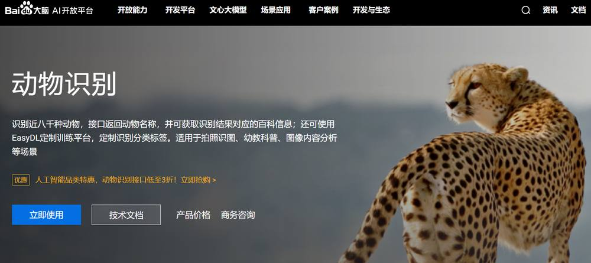
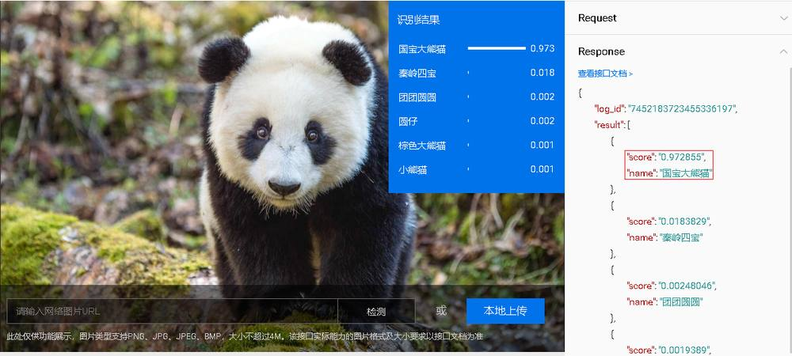
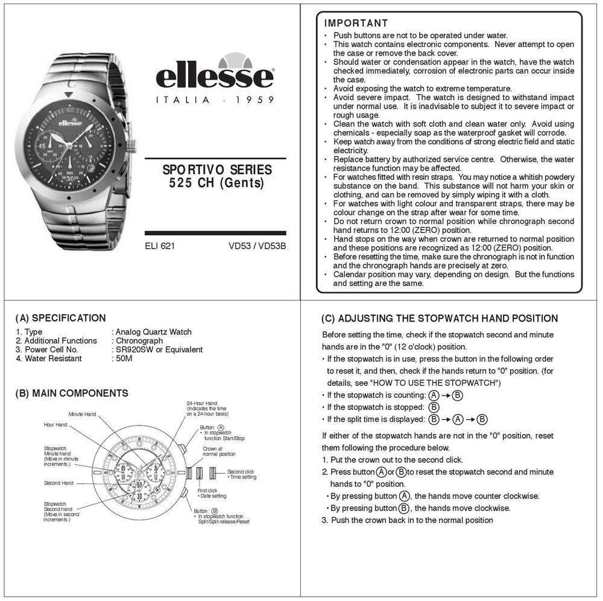
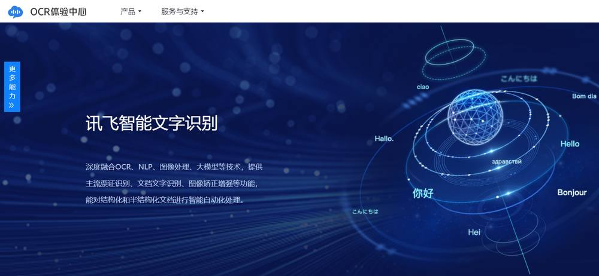
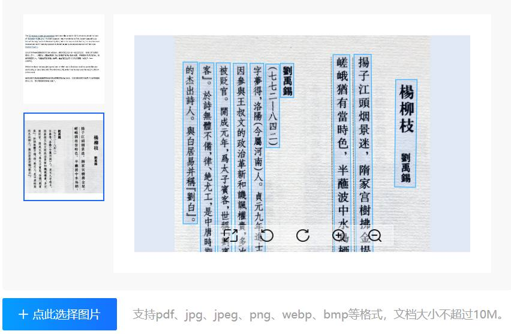
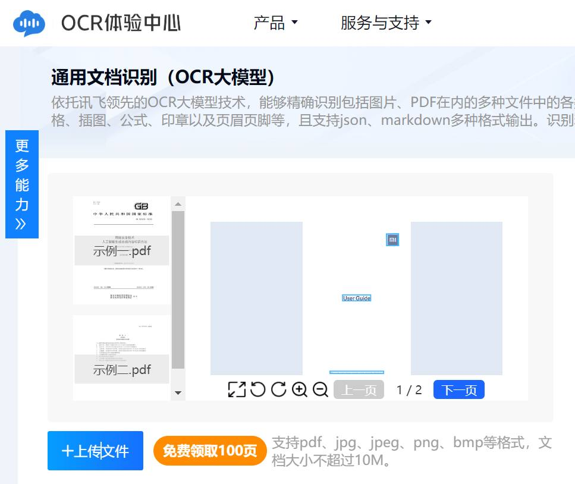
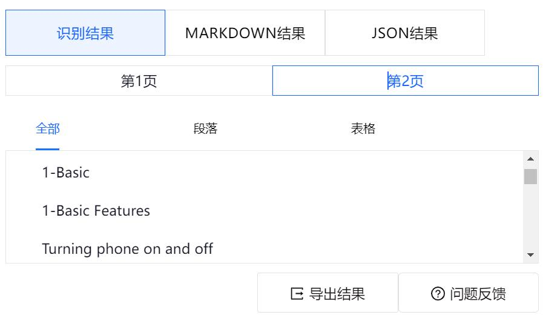
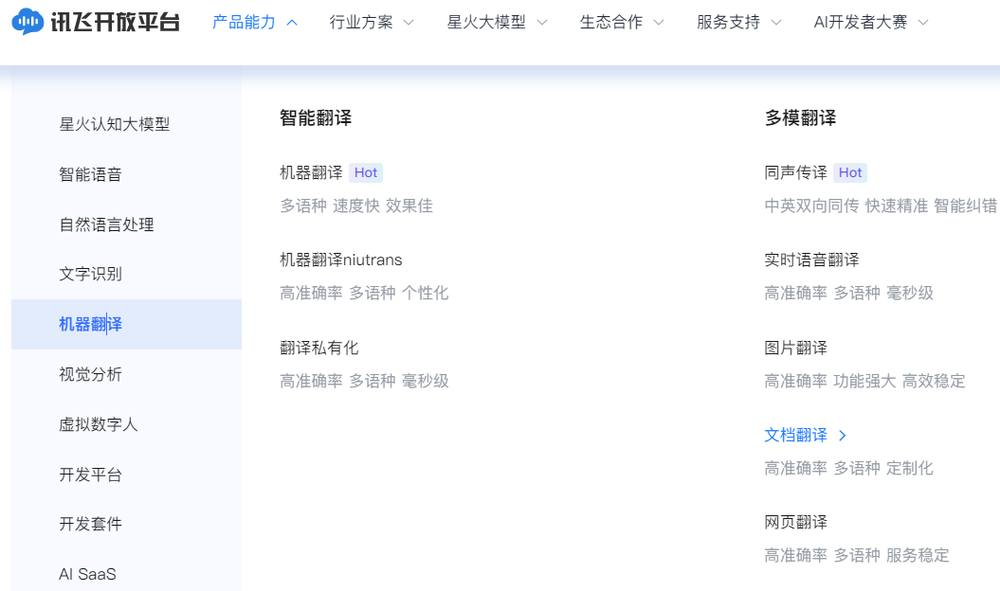

第 1 页 · 4 课堂实践
4 课堂实践

模块2：认识机器学习


第 2 页 · 不认识动物

不认识动物
怎么办？
第 3 页 · 认识百度大脑
认识百度大脑

第 4 页 · 项目1：智能识别动物
项目1：智能识别动物
利用智能云服务的图像识别能力快速了解看到的动物
1.实践任务描述
第 5 页 · 项目1：智能识别动物
项目1：智能识别动物
2.解决方案设计
第 6 页 · 任务1—准备一张动物图像
任务1—准备一张动物图像
项目1：智能识别动物
3.实践任务实施
第 7 页 · 项目1：智能识别动物
项目1：智能识别动物
3.实践任务实施
任务2—智能获取动物信息

第 8 页 · 项目1：智能识别动物
项目1：智能识别动物
3.实践任务实施
任务2—智能获取动物信息

细心的读者可能会问一些问题。动物识别的依据到底是怎样的？识别行为是如何开展的？哪些因素会影响最终的识别结果？请同学们结合本项目的学习内容展开讨论。
第 9 页 · 不懂英文怎么办？


不懂英文怎么办？
第 10 页 · 认识讯飞OCR体验中心
认识讯飞OCR体验中心

第 11 页 · 项目2：翻译英文产品使用手册
项目2：翻译英文产品使用手册
利用人工智能的深度学习技术，把英文使用手册上的文本快速翻译成中文。
1.实践任务描述
第 12 页 · 项目2：翻译英文产品使用手册
项目2：翻译英文产品使用手册
2.解决方案设计

第 13 页 · 项目2：翻译英文产品使用手册
项目2：翻译英文产品使用手册
任务1—上传英文使用手册文件
3.实践任务实施

第 14 页 · 项目2：翻译英文产品使用手册
项目2：翻译英文产品使用手册
3.实践任务实施
任务2—导出识别结果

第 15 页 · 项目2：翻译英文产品使用手册
项目2：翻译英文产品使用手册
3.实践任务实施

任务3—将识别结果翻译成中文

第 16 页 · 项目2：翻译英文产品使用手册
项目2：翻译英文产品使用手册
3.实践任务实施

任务3—将识别结果翻译成中文
第 17 页 · 项目2：翻译英文产品使用手册
项目2：翻译英文产品使用手册
3.实践任务实施
任务3—将识别结果翻译成中文
第 18 页 · 项目2：翻译英文产品使用手册
项目2：翻译英文产品使用手册
3.实践任务实施

任务3—将识别结果翻译成中文
第 19 页 · 学生分享及教师点评
学生分享及教师点评

| 分享要点 | 分值 | 计分 | 教师点评 |
| 1、除了识别动物外，百度智能云还能识别哪些对象？ | 15 | 主动了解百度智能云 | |
| 2、智能识别动物用到了哪些AI技术？ | 15 | 主动思考，探究背后技术 | |
| 3、还有哪些AI工具可用于识别图像上的文字？请列举。 | 30 | 积极思考、善于主动发现 | |
| 4、常用的QQ有哪些AI功能吗？ | 10 | 善于发现身边的AI | |
| 5、有哪些AI工具可以用于智能翻译文档？ | 20 | 问题驱动，求解答案 | |
| 6、其它（含逻辑、表情、主动、清晰、流畅、新意等） | 0-10 | 能说、会思、质疑、精技 |
第 20 页 · 子任务3：语音提示处理
子任务3：语音提示处理

人机协同
善用智能